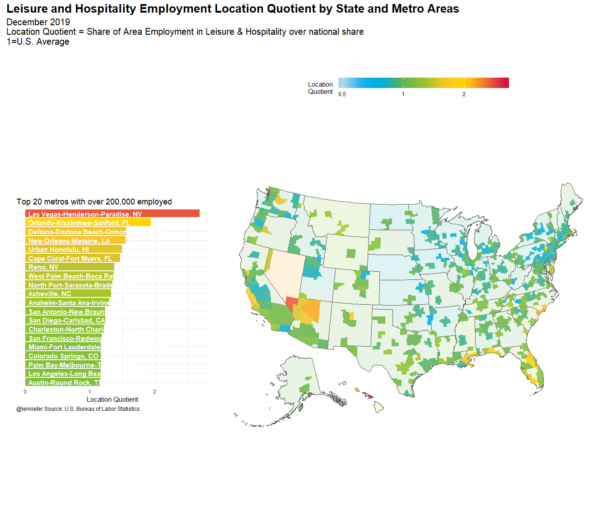

I have been thinking about how the recent volatility could impact the economy. If travel and tourism contract due to fears of a pandemic, the impact will differ in markets around the United States. One way to think about this is to compute the Location Quotient, or the percentage of the employment in an area that is in the leisure and hospitality industry.
Conside the graphic below:

This map shows areas (states and core based statistical areas) color-coded by their location quotient. Blue regions have less dependence on leisure and hospitality. Redder areas have more. At the top of the list (among metros with at least 200,000 employed) are Las Vegas and Orlando.
The housing markets in Las Vegas and Orlando have benefited from a strong economy. But if travel and tourism contract, those areas could face tough times ahead. Areas in the upper midwest and around the Great Lakes have less exposure to travel and tourism. However, if we face supply disruptions, those areas could face challenges as they rely more on manufacturing.
Below I share R code to generate the figure above.
Data wrangling code
###########################################
# Load libraries ----
###########################################
library(httr)
library(readxl)
library(sf)
library(tidyverse)
library(data.table)
library(albersusa)
library(tigris)
library(patchwork)
###########################################
# color palette code ----
###########################################
my_colors <- c(
"green" = rgb(103,180,75, maxColorValue = 256),
"green2" = rgb(147,198,44, maxColorValue = 256),
"lightblue" = rgb(9, 177,240, maxColorValue = 256),
"lightblue2" = rgb(173,216,230, maxColorValue = 256),
'blue' = "#00aedb",
'red' = "#d11141",
'orange' = "#f37735",
'yellow' = "#ffc425",
'gold' = "#FFD700",
'light grey' = "#cccccc",
'purple' = "#551A8B",
'dark grey' = "#8c8c8c")
my_cols <- function(...) {
cols <- c(...)
if (is.null(cols))
return (my_colors)
my_colors[cols]
}
my_palettes <- list(
`main` = my_cols("blue", "green", "yellow"),
`cool` = my_cols("blue", "green"),
`cool2hot` = my_cols("lightblue2","lightblue", "blue","green", "green2","yellow","gold", "orange", "red"),
`hot` = my_cols("yellow", "orange", "red"),
`mixed` = my_cols("lightblue", "green", "yellow", "orange", "red"),
`mixed2` = my_cols("lightblue2","lightblue", "green", "green2","yellow","gold", "orange", "red"),
`mixed3` = my_cols("lightblue2","lightblue", "green", "yellow","gold", "orange", "red"),
`mixed4` = my_cols("lightblue2","lightblue", "green", "green2","yellow","gold", "orange", "red","purple"),
`mixed5` = my_cols("lightblue","green", "green2","yellow","gold", "orange", "red","purple","blue"),
`mixed6` = my_cols("green", "gold", "orange", "red","purple","blue"),
`grey` = my_cols("light grey", "dark grey")
)
my_pal <- function(palette = "main", reverse = FALSE, ...) {
pal <- my_palettes[[palette]]
if (reverse) pal <- rev(pal)
colorRampPalette(pal, ...)
}
scale_color_mycol <- function(palette = "main", discrete = TRUE, reverse = FALSE, ...) {
pal <- my_pal(palette = palette, reverse = reverse)
if (discrete) {
discrete_scale("colour", paste0("my_", palette), palette = pal, ...)
} else {
scale_color_gradientn(colours = pal(256), ...)
}
}
scale_fill_mycol <- function(palette = "main", discrete = TRUE, reverse = FALSE, ...) {
pal <- my_pal(palette = palette, reverse = reverse)
if (discrete) {
discrete_scale("fill", paste0("my_", palette), palette = pal, ...)
} else {
scale_fill_gradientn(colours = pal(256), ...)
}
}
###########################################
# data stuff ----
###########################################
dt_sm <- fread("http://download.bls.gov/pub/time.series/sm/sm.data.0.Current")
dt_sm2 <- dt_sm[period !="M13", ][,date:=as.Date(ISOdate(year,as.integer(substr(period,2,3)),1))]
sm_series <- fread("https://download.bls.gov/pub/time.series/sm/sm.series")
sm_industry <- fread("https://download.bls.gov/pub/time.series/sm/sm.industry")
sm_supersector <- fread("https://download.bls.gov/pub/time.series/sm/sm.supersector")
sm_datatype <- fread("https://download.bls.gov/pub/time.series/sm/sm.data_type")
my_ind <- c(0,70000000)
my_sector <- c(0,70)
sm_area <- fread("https://download.bls.gov/pub/time.series/sm/sm.area")
sm_state <- fread("https://download.bls.gov/pub/time.series/sm/sm.state")
# exclude Puerto Rico and Virgin Islands
st_drop <- c(72,78)
series_list <- sm_series[industry_code==0& seasonal=="U"&area_code==00000 &
!state_code %in% st_drop,]$series_id
dt_sm3 <-
merge(dt_sm2[date==max(date),],sm_series,
by="series_id")[
industry_code %in% c(0,70000000) &
area_code==0 & !state_code %in% st_drop & seasonal=="S" &
data_type_code==1,
][,
share:=value[industry_code!=0]/value[industry_code==0],
by=state_code
][,share_total:=sum(value[industry_code!=0])/sum(value[industry_code==0])
][,lq:=share/share_total]
###########################################
# load albers usa maps
# via https://github.com/hrbrmstr/albersusa
###########################################
us_sf <- usa_sf("laea")
cty_sf <- counties_sf("laea")
# state map
df_state <-
left_join ( us_sf %>% mutate(GEOID=as.integer(as.character(fips_state))),
dt_sm3[industry_code==0,],
by=c("GEOID"="state_code")) %>%
filter(!is.na(lq))
###########################################
# get delineation file (use April 2018 version)
###########################################
url1 <- "https://www2.census.gov/programs-surveys/metro-micro/geographies/reference-files/2018/delineation-files/list1.xls"
GET(url1, write_disk(tf <- tempfile(fileext = ".xls")))
dfs <- read_excel(tf,skip=2) #read in data from third row
# get rid of nasty spacesess in colnames
colnames(dfs) <- gsub('([[:punct:]])|\\s+','_',names(dfs))
dfs <- data.table(dfs)[,fips:=paste0(FIPS_State_Code,FIPS_County_Code)]
dfs2 <- dfs[,c("CBSA_Code","CBSA_Title","fips")][!is.na(CBSA_Title),][,fips:=str_pad(fips,5,side="left",pad="0")]
# msa map
cbsa_sf <- left_join(cty_sf %>% mutate(fips=as.character(fips)), dfs2, by="fips")
dt_sm4 <-
merge(dt_sm2[date==max(date),],sm_series,
by="series_id")[
industry_code %in% c(0,70000000) &
area_code!=0 & !state_code %in% st_drop & seasonal=="U" &
data_type_code==1,
][, share:=value[industry_code!=0]/value[industry_code==0],
by=area_code
][,share_total:=sum(value[industry_code!=0])/sum(value[industry_code==0])
][,lq:=share/share_total]
###########################################
# NECTAs! ----
###########################################
ne <- new_england(cb = TRUE) %>% st_as_sf()Graph code
###########################################
# create map ----
###########################################
gmap <-
left_join ( filter(cbsa_sf,!is.na(CBSA_Code))%>% mutate(area_code=as.integer(CBSA_Code)),
dt_sm4[industry_code==0,],
by=c("area_code"="area_code")) %>%
filter(!is.na(lq)) %>%
ggplot(aes(fill=log(lq)))+
geom_sf(data=df_state,alpha=0.15)+
geom_sf(data=left_join(ne %>% mutate(area_code=as.integer(NECTAFP)),
dt_sm4[industry_code==0,],
by=c("area_code"="area_code"))%>%
filter(!is.na(lq)),color=NA,alpha=0.85) +
geom_sf(color=NA,alpha=0.85)+
theme_minimal()+
scale_fill_mycol(palette="cool2hot",discrete=FALSE,
name="Location \nQuotient ",
breaks=c(log(0.5),log(1),log(2)),
labels=c(0.5,1,2),
limits=c(log(0.5),log(3.15)))+
theme(panel.grid=element_blank(),
legend.key.width=unit(2,"cm"),
axis.text=element_blank(),
plot.caption=element_text(hjust=0))+
labs(title="Leisure and Hospitality Employment Location Quotient by State & Metro Area",
subtitle="December 2019\nLocation Quotient = Share of Area Employment in Leisure & Hospitality over national share\n1=U.S. Average",
caption="@lenkiefer Source: U.S. Bureau of Labor Statistics")
###########################################
# bar chart top 20 metros----
###########################################
gtop <-dt_sm4[!is.na(lq),][industry_code==0][value>200,][order(-lq),][1:20,]%>%
left_join(sm_area,by="area_code") %>%
mutate(namef=fct_reorder(factor(area_name),lq)) %>%
ggplot(aes(x=namef,y=lq,fill=log(lq)))+
scale_fill_mycol(palette="cool2hot",discrete=FALSE,
name="Location\nQuotient",
breaks=c(log(0.5),log(1),log(2)),
labels=c(0.5,1,2),
limits=c(log(0.5),log(3.15)))+
geom_col()+coord_flip()+
geom_text(hjust=0,aes(label=namef,y=0.05),color="white",fontface="bold")+
theme_minimal()+
scale_x_discrete(expand=c(0,0))+
#scale_y_continuous(limits=c(0,3))+
theme(legend.position="none",
axis.text.y=element_blank(),
plot.caption=element_text(hjust=0))+
theme(legend.position="none",
plot.caption=element_text(hjust=0))+
labs(y="Location Quotient",x="",
title="Top 20 metros with over 200,000 employed"
)
###########################################
# bar chart bottom 10 metros----
###########################################
gbottom <-dt_sm4[!is.na(lq),][industry_code==0][value>200,][order(lq),][1:10,]%>%
left_join(sm_area,by="area_code") %>%
mutate(namef=fct_reorder(factor(area_name),lq)) %>%
ggplot(aes(x=namef,y=lq,fill=log(lq)))+
scale_fill_mycol(palette="cool2hot",discrete=FALSE,
name="Location\nQuotient",
breaks=c(log(0.5),log(1),log(2)),
labels=c(0.5,1,2),
limits=c(log(0.5),log(3.15)))+
geom_col()+coord_flip()+
geom_text(hjust=0,aes(label=namef,y=0.05),color="white",fontface="bold")+
theme_minimal()+
scale_x_discrete(expand=c(0,0))+
#scale_y_continuous(limits=c(0,3))+
theme(legend.position="none",
axis.text.y=element_blank(),
plot.caption=element_text(hjust=0))+
labs(y="Location Quotient",x="",
title="Bottom 10 metros with over 200,000 employed"
)
###########################################
# use patchwork layouts ----
# https://patchwork.data-imaginist.com/articles/guides/layout.html
###########################################
layout <- "
##BBBB
AABBBB
AABBBB
##BBBB
"
###########################################
# make composite plot ----
###########################################
gtop+
#gbottom+
labs(caption="@lenkiefer Source: U.S. Bureau of Labor Statistics")+
plot_annotation( title="Leisure and Hospitality Employment Location Quotient by State and Metro Areas",
subtitle="December 2019\nLocation Quotient = Share of Area Employment in Leisure & Hospitality over national share\n1=U.S. Average",
theme=theme(plot.caption=element_text(hjust=0),
plot.subtitle=element_text(size=rel(1.35)),
plot.title=element_text(size=rel(1.75),face="bold")))+
gmap+labs(title="",subtitle="",caption="")+
theme(legend.position="top",legend.direction="horizontal")+
plot_layout(design=layout)